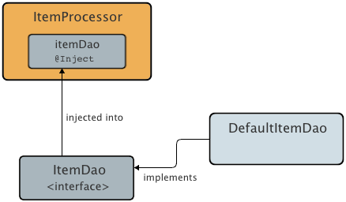

Apache NetBeans (incubating)
Apache NetBeans (incubating)Just released!
CDIの注入および修飾子の操作
| This tutorial needs a review. You can open a JIRA issue, or edit it in GitHub following these contribution guidelines. |
執筆: Andy Gibson
コンテキストと依存性の注入
-
CDIの注入および修飾子の操作

Figure 1. このページの内容は、NetBeans IDE 7.2、7.3、7.4および8.0に適用されます
JSR-299で指定されているコンテキストと依存性の注入(CDI: Contexts and Dependency Injection)はJava EE 6の不可欠な部分であり、サーブレット、エンタープライズBean、JavaBeansなどのJava EEコンポーネントが、アプリケーションのライフサイクル内で明確なスコープを持って存在できるようにするためのアーキテクチャを提供します。また、CDIサービスによって、EJBセッションBeanやJSF (JavaServer Faces)管理対象BeanなどのJava EEコンポーネントが注入可能になり、イベントの起動や監視による疎結合方式の対話が可能になります。
このチュートリアルは、Andy Gibson氏によって投稿されたCDI入門パート2 - 注入というタイトルのブログをベースにしています。ここでは、クラスやインタフェースを他のクラスに_注入_するために、どのようにCDI注入を使用できるかについて示します。また、特定の注入ポイントに注入するクラスの型を指定できるようにするために、CDI_修飾子_をコードに適用する方法についても示します。
NetBeans IDEは、コンテキストと依存性の注入のサポートを組込みでサポートしています。これには、プロジェクト作成時に`beans.xml` CDI構成ファイルを生成するオプション、注釈のためのエディタおよびナビゲーション・サポート、一般的に使用されるCDIアーティファクトを作成するための各種ウィザードなどが含まれています。
このチュートリアルを完了するには、次のソフトウェアとリソースが必要です。
| ソフトウェアまたはリソース | 必須バージョン |
|---|---|
7.2、7.3、7.4、8.0、Java EEバージョン |
|
バージョン7または8 |
|
Open Source Edition 3.xまたは4x |
|
n/a |
*注意: *
-
NetBeans IDEのJavaバンドル版には、Java EE準拠のコンテナであるGlassFish Server Open Source Editionも含まれています。
-
このチュートリアルのサンプル・ソリューション・プロジェクトをダウンロードできます: cdiDemo2.zip
注入(Injection): CDIの「I」
CDIは、コンテキストと依存性を注入するためのAPIです。SeamおよびSpringでは多くの場合、Beanに名前を付けて、その名前で注入ポイントにバインディングすることで依存性が機能します。コンテキストと依存性の注入およびJSF 2.0の開始を終えてからこのチュートリアルを進めている場合、これまでは`@Named`注釈を使用してBeanの名前を定義したときに、JSFページから名前で管理対象Beanを参照するのみでした。`@Named`注釈の主な役割は、アプリケーション内のEL文を解決できるようにBeanを定義することです。この解決は、通常はJSF ELリゾルバによって行われます。注入は名前を使用して実行することもできますが、この方法はCDIの注入を機能させる本来の方法ではありません。CDIには、注入ポイントおよび注入ポイントに注入するBeanを表すための様々な方法が提供されています。
次の例では、ItemDao`インタフェースを実装するクラスから項目の一覧を取得する`ItemProcessor`を作成します。別のクラスにBeanを_注入_できるようにする方法を示すため、CDIの@Inject`注釈を利用します。次の図は、この課題で構築するシナリオを図解しています。

Figure 2. アプリケーションの疎結合クラスへのCDI注入の使用
DAOはデータ・アクセス・オブジェクト(Data Access Object)を表します。
-
まず、`cdiDemo.zip`ファイル(上記の必要なリソースの一覧表を参照)からサンプルのスタート・プロジェクトを抽出します。「ファイル」>「プロジェクトを開く」([Ctrl]-[Shift]-[O]、Macの場合は[⌘]-[Shift]-[O])を選択してから、コンピュータ上のこのプロジェクトの場所を選択することで、IDEでプロジェクトを開きます。
-
「プロジェクト」ウィンドウでプロジェクトのノードを右クリックし、「プロパティ」を選択します。
-
「実行」カテゴリを選択し、「サーバー」ドロップダウン・リストでGlassFishインスタンスが選択されていることを確認します。
-
新しい`Item`クラスを作成して、`exercise2`という名前の新しいパッケージに格納します。「新規ファイル」(image::images/new-file-btn.png[])ボタンをクリックするか、[Ctrl]-[N] (Macの場合は[⌘]-[N])を押してファイル・ウィザードを開きます。
-
「Java」カテゴリから「Javaクラス」を選択します。「次」をクリックします。
-
クラス名として「Item」、パッケージとして「exercise2」と入力します。(ウィザードの完了時に新しいパッケージが作成されます。) image::images/java-class-wizard.png[title="ファイル・ウィザードを使用した新しいJavaクラスの作成"]
-
「終了」をクリックします。新しいクラスおよびパッケージが生成され、エディタで`Item`クラスが開きます。
-
POJOである`Item`に`value`および`limit`プロパティを作成して、`toString()`メソッドを実装します。次の内容をクラスに追加します。
public class Item {
*private int value;
private int limit;
@Override
public String toString() {
return super.toString() + String.format(" [Value=%d, Limit=%d]", value,limit);
}*
}-
取得メソッドおよび設定メソッドをクラスに追加します。これを行うには、カーソルがクラス定義の間(クラスの中括弧の間)にあることを確認してからエディタ内で右クリックし、「コードを挿入」を選択します([Alt]-[Insert]、Macの場合は[Ctrl]-[I])。取得メソッドおよび設定メソッドを選択します。 image::images/insert-code.png[title="「コードを挿入」ポップアップを使用した取得メソッドおよび設定メソッドの作成"]
-
「
Item」チェックボックスを選択します(これで、クラスに含まれているプロパティがすべて選択されます)。 image::images/generate-getters-setters.png[title="クラスに含まれているすべてのプロパティを選択するためのクラスのチェックボックスの選択"] -
「生成」をクリックします。クラスの取得メソッドと設定メソッドが生成されます。
public class Item {
private int value;
private int limit;
*public int getLimit() {
return limit;
}
public void setLimit(int limit) {
this.limit = limit;
}
public int getValue() {
return value;
}
public void setValue(int value) {
this.value = value;
}*
@Override
public String toString() {
return super.toString() + String.format(" [Value=%d, Limit=%d]", value, limit);
}
}-
value`と`limit`の両方の引数を取るコンストラクタを作成します。これにもIDEの支援機能を使用できます。クラス定義内で[Ctrl]-[Space]を押して、「`Item(int value, int limit) - 生成」オプションを選択します。 image::images/generate-constructor.png[title="[Ctrl]-[Space]の押下によるエディタのコード補完機能の利用"] 次のコンストラクタがクラスに追加されます。
public class Item {
*public Item(int value, int limit) {
this.value = value;
this.limit = limit;
}*
private int value;
private int limit;
...-
`ItemDao`インタフェースを作成して、`Item`オブジェクトの一覧を取得する方法を定義します。このテスト・アプリケーションでは複数の実装を使用することを予定しているため、インタフェースへのコードを作成します。
「新規ファイル」(image::images/new-file-btn.png[])ボタンをクリックするか、[Ctrl]-[N] (Macの場合は[⌘]-[N])を押してファイル・ウィザードを開きます。
-
「Java」カテゴリから「Javaインタフェース」を選択します。「次」をクリックします。
-
クラス名として「ItemDao」、パッケージとして「exercise2」と入力します。
-
「終了」をクリックします。新しいインタフェースが生成され、エディタで開かれます。
-
`Item`オブジェクトの`List`を返す`fetchItems()`という名前のメソッドを追加します。
public interface ItemDao {
*List<Item> fetchItems();*
}(エディタのヒントを使用して`java.util.List`のインポート文を追加します。) 18. `ItemProcessor`クラスを作成します。これはメイン・クラスであり、ここにBeanを注入したり、ここからプロセスを実行したりします。今のところはDAOから始めて、プロセッサBeanにこれを注入する方法を見てみます。
「新規ファイル」(image::images/new-file-btn.png[])ボタンをクリックするか、[Ctrl]-[N] (Macの場合は[⌘]-[N])を押してファイル・ウィザードを開きます。
-
「Java」カテゴリから「Javaクラス」を選択します。「次」をクリックします。
-
クラス名として「ItemProcessor」、パッケージとして「exercise2」と入力します。「終了」をクリックします。
新しいクラスが生成され、エディタで開かれます。
-
次のようにクラスを変更します。
@Named
@RequestScoped
public class ItemProcessor {
private ItemDao itemDao;
public void execute() {
List<Item> items = itemDao.fetchItems();
for (Item item : items) {
System.out.println("Found item " + item);
}
}
}-
インポートを修正します。エディタを右クリックして「インポートを修正」を選択するか、[Ctrl]-[Shift]-[I] (Macの場合は[⌘]-[Shift]-[I])を押します。 image::images/fix-imports.png[title="エディタで右クリックして「インポートを修正」を選択し、クラスにインポート文を追加する"]
-
「OK」をクリックします。次のクラスのインポート文が必要になります。
-
java.util.List -
javax.inject.Named -
javax.enterprise.context.RequestScoped
-
-
項目の一覧を作成して、決まった項目の一覧を返すのみの単純なDAOから始めます。
「プロジェクト」ウィンドウで「exercise2」パッケージ・ノードを右クリックし、「新規」>「Javaクラス」を選択します。新規Javaクラス・ウィザードで、クラス名を「DefaultItemDao」にします。「終了」をクリックします。 image::images/java-class-wizard2.png[title="Javaクラス・ウィザードを使用した新しいJavaクラスの作成"]
25. エディタで、`DefaultItemDao`に`ItemDao`インタフェースを実装させて、`fetchItems()`を実装します。
public class DefaultItemDao *implements ItemDao* {
*@Override
public List<Item> fetchItems() {
List<Item> results = new ArrayList<Item>();
results.add(new Item(34, 7));
results.add(new Item(4, 37));
results.add(new Item(24, 19));
results.add(new Item(89, 32));
return results;
}*
}[Ctrl]-[Shift]-[I] (Macの場合は[⌘]-[Shift]-[I])を押して、`java.util.List`および`java.util.ArrayList`のインポート文を追加します。 26. `ItemProcessor`クラスに切り替えます([Ctrl]-[Tab]を押します)。`ItemProcessor`に`DefaultItemDao`を注入するために、`ItemDao`フィールドに`javax.inject.Inject`注釈を追加して、このフィールドが注入ポイントであることを示します。
*import javax.inject.Inject;*
...
@Named
@RequestScoped
public class ItemProcessor {
*@Inject*
private ItemDao itemDao;
...
}エディタのコード補完サポートを利用して、クラスに`@Inject`注釈およびインポート文を追加します。たとえば、「@Inj」と入力してから[Ctrl]-[Space]を押します。
27. 最後に、`ItemProcessor`で`execute()`メソッドをコールするためのなんらかの方法が必要です。これはSE環境なら実行できますが、今のところはJSFページ内にとどめておきます。`execute()`メソッドをコールするボタンを含む`process.xhtml`という名前の新しいページを作成します。
「新規ファイル」(image::images/new-file-btn.png[])ボタンをクリックするか、[Ctrl]-[N] (Macの場合は[⌘]-[N])を押してファイル・ウィザードを開きます。
28. 「JavaServer Faces」カテゴリを選択し、「JSFページ」を選択します。「次」をクリックします。
29. ファイル名として「process」と入力してから「終了」をクリックします。
image::images/new-jsf-page.png[title="JSFファイル・ウィザードを使用した新しい「Facelets」ページの作成"]
30. 新しい`process.xhtml`ファイルで、ItemProcessor.execute()`メソッドに接続されたボタンを追加します。ELを使用する場合、管理対象Beanのデフォルト名は、クラス名の最初の文字を小文字にした名前(つまり`itemProcessor)になります。
<h:body>
*<h:form>
<h:commandButton action="#{itemProcessor.execute}" value="Execute"/>
</h:form>*
</h:body>-
プロジェクトを実行する前に、`process.xhtml`ファイルをプロジェクトのWebデプロイメント・ディスクリプタの新しい開始ページに設定します。
IDEの「ファイルに移動」ダイアログを使用すると、すばやく`web.xml`を開けます。IDEのメイン・メニューで「ナビゲート」>「ファイルに移動」([Alt]-[Shift]-[O]、Macの場合は[Ctrl]-[Shift]-[O])を選択してから「web」と入力します。
image::images/go-to-file.png[title="「ファイルに移動」ダイアログを使用した、プロジェクト・ファイルの速やかな検索"]
32. 「OK」をクリックします。`web.xml`ファイルの「XML」ビューで、次のように変更します。
<welcome-file-list>
<welcome-file>faces/*process.xhtml*</welcome-file>
</welcome-file-list>-
IDEのメイン・ツールバーにある「プロジェクトの実行」(image::images/run-project-btn.png[])ボタンをクリックします。プロジェクトがコンパイルされてGlassFishにデプロイされ、`process.xhtml`ファイルがブラウザで開きます。
-
ページに表示されている「
Execute」ボタンをクリックします。IDEに戻ってGlassFishのサーバー・ログを調べます。サーバー・ログは、「出力」ウィンドウ([Ctrl]-[4]、Macの場合は[⌘]-[4])の「GlassFish Server」タブの下に表示されます。ボタンをクリックすると、デフォルトDAO実装による項目がログに一覧表示されます。 image::images/output-window.png[title="IDEの「出力」ウィンドウでのサーバー・ログの確認"] ログをクリアするには、「出力」ウィンドウで右クリックして「クリア」を選択([Ctrl]-[L]、Macの場合は[⌘]-[L])します。上記のイメージでは、「Execute」ボタンをクリックする直前にログをクリアしています。
ItemDao`インタフェースを実装するクラスを作成し、モジュールの管理対象Beanは、アプリケーションがデプロイされたときに(モジュールの`beans.xml`ファイルのために) CDI実装によって処理されました。ここで使用した@Inject`注釈は、そのフィールドに管理対象Beanを注入することを指定します(注入可能Beanについて把握していることは、このBeanが`ItemDao`またはこのインタフェースのサブタイプを実装する必要があることのみです)。この場合、`DefaultItemDao`クラスは条件を完全に満たしています。
注入された可能性のある`ItemDao`の実装が複数ある場合はどうなるでしょうか。CDIはどの実装を選択する必要があるかを判断できないため、デプロイ時エラーが発生します。これを解決するには、CDI修飾子を使用する必要があります。修飾子については次の項で詳しく説明します。
修飾子の操作
CDI修飾子は、クラス・レベルで適用してクラスがどの種類のBeanなのかを示したり、(特に)フィールド・レベルで適用してその場所でどの種類のBeanが注入される必要があるかを示したりできる注釈です。
ここでビルドしているアプリケーションに修飾子が必要なことを示すために、やはり`ItemDao`インタフェースを実装するもう1つのDAOクラスをアプリケーションに追加してみます。次の図は、この課題で構築しているシナリオを図解しています。CDIは、注入ポイントで使用する必要があるBean実装を判断できる必要があります。2つの`ItemDao`の実装があるため、Demo`という名前の修飾子を作成することでこれを解決できます。その後、使用するBeanと`ItemProcessor`の注入ポイントの両方に、@Demo`注釈で「タグ」を付けます。

Figure 3. アプリケーションの疎結合クラスへのCDI注入および修飾子の使用
次の手順を実行します。
-
「プロジェクト」ウィンドウで「
exercise2」パッケージを右クリックし、「新規」>「Javaクラス」を選択します。 -
新規Javaクラス・ウィザードで、新しいクラス名を「AnotherItemDao」にしてから「終了」をクリックします。新しいクラスが生成され、エディタで開かれます。
-
クラスを次のように変更して、`ItemDao`インタフェースを実装し、インタフェースの`fetchItems()`メソッドを定義します。
public class AnotherItemDao *implements ItemDao* {
*@Override
public List<Item> fetchItems() {
List<Item> results = new ArrayList<Item>();
results.add(new Item(99, 9));
return results;
}*
}`java.util.List`および`java.util.ArrayList`のインポート文を必ず追加するようにしてください。これを行うには、エディタを右クリックして「インポートを修正」を選択するか、[Ctrl]-[Shift]-[I] (Macの場合は[⌘]-[Shift]-[I])を押します。
これで`ItemDao`を実装するクラスが2つになったため、どのBeanを注入する必要があるかがわからなくなりました。
-
「プロジェクトの実行」(image::images/run-project-btn.png[])ボタンをクリックして、プロジェクトを実行します。今度はプロジェクトのデプロイに失敗します。
「保存時にデプロイ」がデフォルトで有効になっていて、IDEがプロジェクトを自動的にデプロイするため、ファイルを保存するのみで済む可能性があります。
-
出力ウィンドウ([Ctrl]-[4]、Macの場合は[⌘]-[4])でサーバー・ログを調べます。次のようなエラー・メッセージが表示されています。
Caused by: org.jboss.weld.DeploymentException: Injection point has ambiguous dependencies.
Injection point: field exercise2.ItemProcessor.itemDao;
Qualifiers: [@javax.enterprise.inject.Default()];
Possible dependencies: [exercise2.DefaultItemDao, exercise2.AnotherItemDao]「出力」ウィンドウでテキストを複数行に折り返すには、右クリックして「テキストを折り返す」を選択します。これにより、水平方向にスクロールさせる必要がなくなります。
CDIの実装であるWeldによって示されたあいまいな依存性のエラーは、指定された注入ポイントに使用するBeanを決定できないということを意味しています。WeldのCDI注入に関して起こる可能性のあるエラーは、ほとんどがデプロイメント時に報告され、パッシベーション(非活性化)可能なBeanに`Serializable`実装が欠落していないかどうかのエラーについても報告されます。
1つのクラス型のみに一致させることによって、`ItemProcessor`の`itemDao`フィールドを、`AnotherItemDao`実装型と`DefaultItemDao`実装型のうちの一致する方に指定できました。しかし、このようにするとインタフェースへのコードを作成するメリットがなくなり、フィールドの型を変えずに実装を変更することが難しくなります。よりよい解決策として、かわりにCDI修飾子に目を向けてみます。
CDIが注入ポイントを調べて、注入する適切なBeanを探す際、クラスの型のみでなくすべての修飾子も考慮されます。知らないうちに、@Any`というデフォルトの修飾子をすでに1つ使用しました。ここで使用している`DefaultItemDao`実装の他に、`ItemProcessor`の注入ポイントにも適用できる@Demo`修飾子を作成しましょう。
IDEには、CDI修飾子を生成できるウィザードがあります。
-
「新規ファイル」(image::images/new-file-btn.png[])ボタンをクリックするか、[Ctrl]-[N] (Macの場合は[⌘]-[N])を押してファイル・ウィザードを開きます。
-
「コンテキストと依存性の注入」カテゴリから「修飾子タイプ」を選択します。「次」をクリックします。
-
クラス名として「Demo」、パッケージとして「exercise2」と入力します。
-
「終了」をクリックします。新しい`Demo`修飾子がエディタで開きます。
package exercise2;
import static java.lang.annotation.ElementType.TYPE;
import static java.lang.annotation.ElementType.FIELD;
import static java.lang.annotation.ElementType.PARAMETER;
import static java.lang.annotation.ElementType.METHOD;
import static java.lang.annotation.RetentionPolicy.RUNTIME;
import java.lang.annotation.Retention;
import java.lang.annotation.Target;
import javax.inject.Qualifier;
/**
*
* @author nbuser
*/
@Qualifier
@Retention(RUNTIME)
@Target({METHOD, FIELD, PARAMETER, TYPE})
public @interface Demo {
}次に、この修飾子をクラス・レベルでデフォルトのDAO実装に追加します。
-
エディタで`DefaultItemDao`に切り替え([Ctrl]-[Tab]を押し)、クラス定義の上に「
@Demo」と入力します。
*@Demo*
public class DefaultItemDao implements ItemDao {
@Override
public List<Item> fetchItems() {
List<Item> results = new ArrayList<Item>();
results.add(new Item(34, 7));
results.add(new Item(4, 37));
results.add(new Item(24, 19));
results.add(new Item(89, 32));
return results;
}
}「@」を入力した後で[Ctrl]-[Space]を押して、コード補完の候補を呼び出します。エディタは`Demo`修飾子を認識して、コード補完のオプションとして`@Demo`を表示します。
11. 「プロジェクトの実行」(image::images/run-project-btn.png[])ボタンをクリックして、プロジェクトを実行します。プロジェクトがエラーなくビルドおよびデプロイされます。
*注意:*この変更では、変更を増分的にデプロイするのではなく、プロジェクトを明示的に実行してアプリケーションを再デプロイする必要がある場合があります。
-
ブラウザで「
Execute」ボタンをクリックしてからIDEに戻り、「出力」ウィンドウでサーバー・ログを調べます。次のような出力が表示されます。
INFO: Found item exercise2.Item@1ef62a93 [Value=99, Limit=9]出力には、AnotherItemDao`クラスの項目が一覧表示されます。`ItemProcessor`の注入ポイントではなく、`DefaultItemDao`実装に注釈を付けたことを思い出してください。@Demo`修飾子をデフォルトのDAO実装に追加することで、型と修飾子の両方で一致するようになるため、他の実装が注入ポイントに、より一致するようになりました。`DefaultItemDao`にある`Demo`修飾子は注入ポイントにはないため、あまり適切ではありません。
次に、ItemProcessor`の注入ポイントに@Demo`注釈を追加します。
-
エディタで`ItemProcessor`に切り替え([Ctrl]-[Tab]を押し)、次のように変更します。
@Named
@RequestScoped
public class ItemProcessor {
@Inject *@Demo*
private ItemDao itemDao;
public void execute() {
List<Item> items = itemDao.fetchItems();
for (Item item : items) {
System.out.println("Found item " + item);
}
}
}-
ブラウザで「
Execute」ボタンをクリックしてからIDEに戻り、「出力」ウィンドウでサーバー・ログを調べます。デフォルトの実装(DefaultItemDao)による出力が再度表示されます。
INFO: Found item exercise2.Item@7b3640f1 [Value=34, Limit=7]
INFO: Found item exercise2.Item@26e1cd69 [Value=4, Limit=37]
INFO: Found item exercise2.Item@3274bc70 [Value=24, Limit=19]
INFO: Found item exercise2.Item@dff76f1 [Value=89, Limit=32]これは、現時点では型と修飾子の_両方_をベースにしてマッチングを行っており、正しい型と`@Demo`注釈の両方が当てはまるBeanは`DefaultItemDao`のみであるためです。
代替の注入方法
注入されるクラスの注入ポイントを定義するには複数の方法があります。これまでは、注入されるオブジェクトを参照するフィールドに注釈を付けました。フィールド注入のために取得メソッドや設定メソッドを提供する必要はありません。finalフィールドを持つ不変の管理対象Beanを作成する場合、`@Inject`注釈でコンストラクタに注釈を付けることで、コンストラクタで注入を使用できます。その後で、コンストラクタ・パラメータに任意の注釈を適用して、注入するBeanを修飾できます。(注入対象のBeanを修飾できるように、各パラメータには型があります)。Beanは注入ポイントが定義されたコンストラクタを1つしか持てませんが、複数のコンストラクタを実装することは可能です。
@Named
@RequestScoped
public class ItemProcessor {
private final ItemDao itemDao;
@Inject
public ItemProcessor(@Demo ItemDao itemDao) {
this.itemDao = itemDao;
}
}注入されるBeanに渡すことができる初期化メソッドをコールすることもできます。
@Named
@RequestScoped
public class ItemProcessor {
private ItemDao itemDao;
@Inject
public void setItemDao(@Demo ItemDao itemDao) {
this.itemDao = itemDao;
}
}上記の場合では初期化用に設定メソッドを使用しましたが、任意のメソッドを作成して、メソッド・コールの中で任意の数のBeanの初期化用に使用できます。1つのBeanに複数の初期化メソッドを持たせることもできます。
@Inject
public void initBeans(@Demo ItemDao itemDao, @SomeQualifier SomeType someBean) {
this.itemDao = itemDao;
this.bean = someBean;
}注入ポイントがどのように定義されているかにかかわらず、Beanのマッチングにも同じルールが適用されます。CDIは、型と修飾子をベースに最も適切に一致するものを探そうとします。そして注入ポイントとして一致するBeanが複数ある場合や、一致するBeanがない場合は、デプロイメント時に失敗します。
関連項目
このコンテキストと依存性の注入についてのシリーズの次回に続きます:
CDIおよびJava EEの詳細は、次のリソースを参照してください。